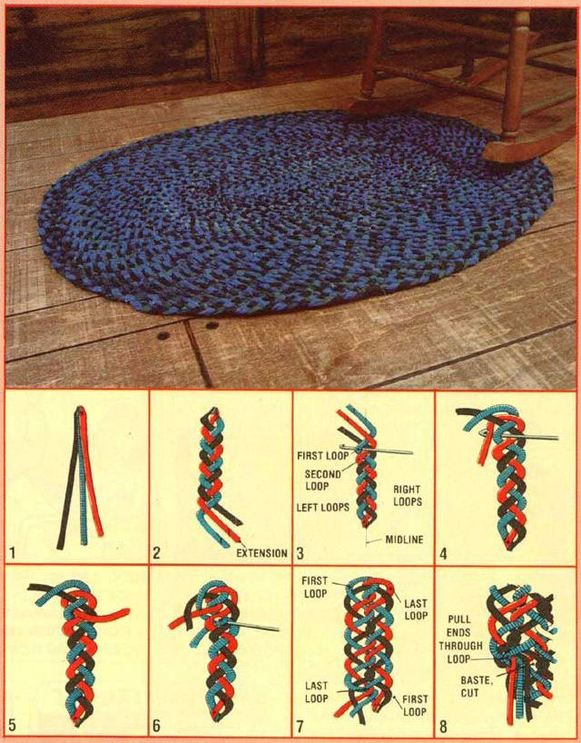

For those who like homemade rugs-but hate sewin' the braids together-here's...
----------------MARY PLEDGE PETERSON:-----------------
By adding one extra step to the standard three-strand braiding process, you can produce a dense, sturdy interwoven rug that's reversible to boot!
The supplies you'll need for this project are probably already on hand, too: needle, thread, thimble, scissors, a large crochet hook (about size K), and some tightly woven, medium-weight cloth (such as worn sheets, tablecloths, curtains, and clothing) that won't ravel excessively.
For a 2' X 3' oval rug, cut 300 strips of fabric at least 1" X 24". If you tear the material, the resulting ravelings will make for an unsightly floor covering... and-although the cutting process is tedious-remember that the pieces don't all have to be exactly the same size. Just measure the first one-so you'll know what to aim for-and "eyeball" the rest... being sure your errors produce wider, rather than narrower, strips. (Variations in length are actually advantageous, since the basted-on extensions won't all appear in the same place and cause lumps in your braided masterwork.)
To begin the rug, line up the ends of three cloth strips on top of each other, make two diagonal cuts through all three layers-so that they come to a point-then baste them together at the tip as shown in Fig. 1.
Next, separate the strips... crush them slightly... and make a loose 12" braid. Whenever your "weaving" process takes you to the end of a strip, add on another by trimming the ends diagonally... overlapping them about 1/4"... and basting them together (see Fig. 2).
When a 12" section is finished, turn the braid around so that the working end is away from you... holding the "loose ends" in place to keep 'em from unraveling. Look carefully at what you've done and compare it with Fig. 3. Notice that- on each side of the midline-there's a series of what I call "loops". During the first round, you'll be working with the loops on the left... then you'll turn the corner and use each loop on the right .
To begin this part of the operation, insert the crochet hook down and all the way through the first loop on the left (see Fig. 3), then bend the loose ends of the strips around to the left-to form a corner-and begin to braid toward you. However, the first strip that comes from underneath the others (as shown in Fig. 4) is pulled-with the crochet hook-completely through the first loop (Fig. 5) and is crossed over to the left as you begin to braid again. The very next strip that comes under is pulled up through the second loop, as in Fig. 6.
Continue in this manner, pulling a strip (always the one coming from underneath) up through each successive loop, until you reach the last one on that side. This final loop should be passed through by a second strip... to provide extra fabric for a flat corner. (Fig. 7 shows the last loop after it's been used twice, as well as the other three "corner" loops... which should each have two strips pulled up through them as they're "rounded".)
Turn the braid around again, make the second corner, and continue to work... pulling one strip up through each remaining loop on the other side of the original 12" braid. Then repeat the cornering procedure: Use the last loop twice... turn the work... and use the first loop twice. That should bring you to the end of the first round and will be the last time it's necessary to pull two strands through a single loop.
Once the initial "circle" is completed, you'll work with the outside braid loops of the previous round. Continue to braid and pull one strip up through each loop until all the strips are used. Then-to finish off your work of art-pull all three strips through a loop, sew them in place securely, and cut them flush with the rug (Fig. 8). The end won't be noticeable if the braiding is terminated just before you turn a corner.
And one other thing: The secret to a rug that never puckers in the center is loose, even braiding. Therefore, make sure you loosen the previous "knot" after each pull-through... and remember that it's especially important that you work loosely around the corners.
While it may take you a little time to get into the "rhythm" of this rugmaking method, your pretty-and durable-end products should last for years!
|
 ILLUSTRATIONS BY THE AUTHOR |
|
|